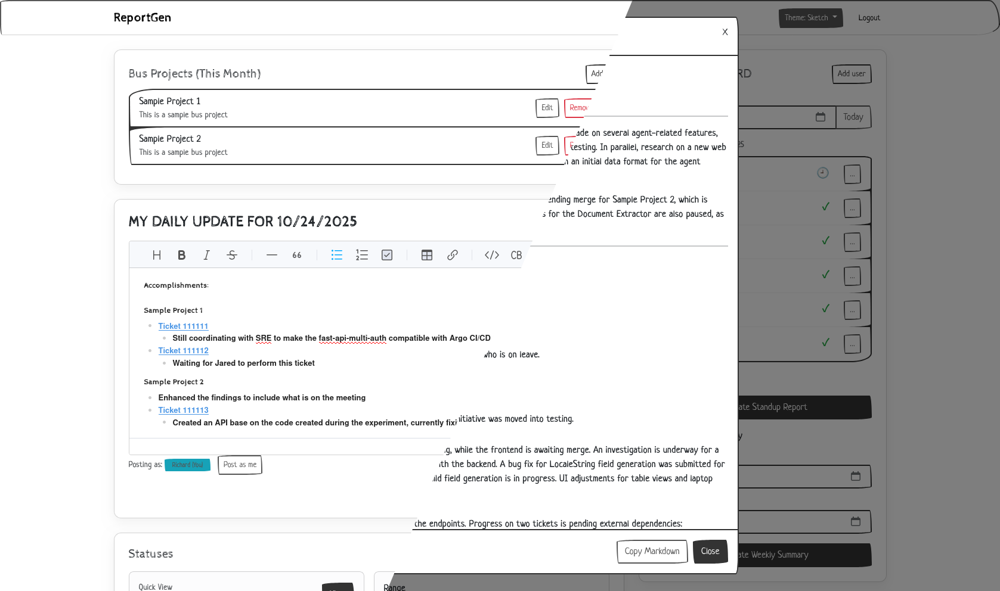
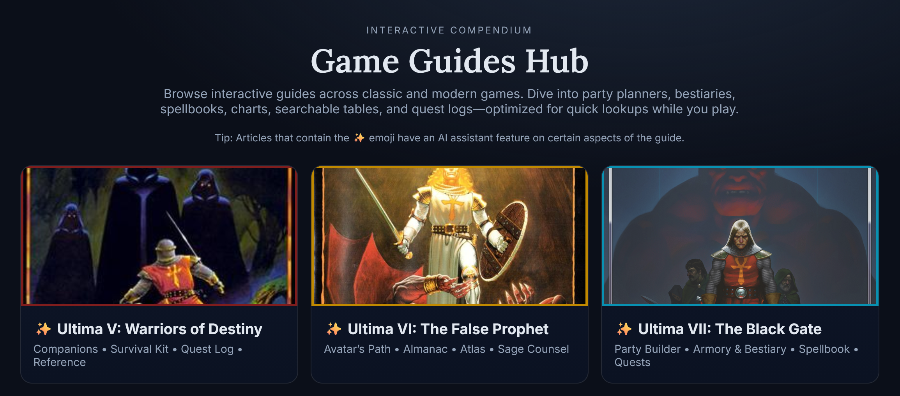

Projects
Here is the list of projects that I started and I had worked on. Some of it are discontinued but I still planned to continue it on the future. Here's a quick table of the projects currently listed on this site. Just click on the name to automatically be redirected to the section of this page you want to go to.
| Name | Type |
|---|---|
| Team Report Generator | Full Stack / Tool |
| GOG Galaxy Replacer | Automation Tool |
| Robo-JS | Interpreter / Game |
| s2sc.js | Compiler / Tool |
| [POC] Canvas Racing Game | Tech Demo |
| Game Guides Hub | Website |
| --- Legacy / Archived --- | |
| Zero Engine | Engine |
| Dragon Slayer | Game |
Team Report Generator (Github)
An automated team synchronization platform designed to drastically reduce administrative overhead. It uses Generative AI (Gemini) to synthesize daily updates into consolidated weekly reports, solving the real-world problem of fragmented team communication.
Key Technologies & Architecture:
- Modern Integration: Implements a sophisticated LLM pipeline for intelligent text summarization.
- Backend Security: Features a secure LLM JSON proxy with CORS handling and rate limiting to protect API usage.
- Full-Stack Architecture: Built with Laravel (backend) and Bootstrap/AJAX (frontend), featuring robust User Management (Roles/Permissions) and "Masquerade" functionality for admins.
Status: Active
GOG Galaxy Replacer (CLI) (GUI)
A system-level automation tool that fixes legacy software compatibility issues by seamlessly upgrading GOG Galaxy's DOSBox installations to DOSBox Staging. It ensures older games run correctly on modern systems with improved input, scaling, and stability.
Engineering Highlights:
- C++ (CLI): High-performance core logic for automated file detection, hash verification, and atomic replacement.
- PowerShell (GUI): A user-friendly wrapper enabling non-technical users to leverage the tool safely.
- Tooling: Demonstrates the ability to build practical utilities that improve workflows and fix third-party platform limitations.
Status: Completed
Robo.js (Github Link)
A gamified exploration of programming language theory, specifically interpreter design. This project builds a custom script execution engine where users write code using specific op-codes to control a robot.
It extends academic concepts into a functional product, demonstrating a deep understanding of parsers, execution stacks, and instruction processing "under the hood."
Status: Hiatus
s2sc.js (Github Link)

My college thesis project. This source-to-source compiler (transpiler) framework explores the complexities of language interoperability by parsing syntax from high-level languages and reconstructing it for execution in a web browser environment.
It represents a deep dive into compiler construction, AST manipulation, and code generation.
Status: Completed
[Proof of Concept] HTML 2D Canvas racing game (Github Link) (Demo page)

A technical feasibility study analyzing the performance limits of the raw HTML5 2D Canvas API.
Rather than just building a game, this project served as a stress test to evaluate rendering bottlenecks without external libraries. The findings provided valuable insights into when to use Canvas API versus WebGL for high-performance rendering.
Status: Completed
Game Guides Hub (Open)
A content-rich web platform for game guides, featuring experimental AI assistance on select articles. It demonstrates the application of context-aware AI agents to provide specific answers based on page content.
Status: Active
Legacy & Archived Projects
Zero Engine (Last Update 2012)

An early attempt at a 2D game engine focusing on drag-and-drop functionality and template management. Kept for historical reference of engine architecture exploration.
Status: Hiatus
Dragon Slayer (Text Based Game) (Last Update 2011)

A text-based RPG from my early academic years (CS120). It mirrors the style of classic games like Ultima. Preserved here as a memento of my starting point in software development.
Status: Legacy